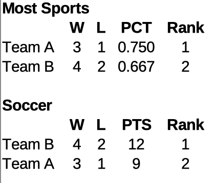
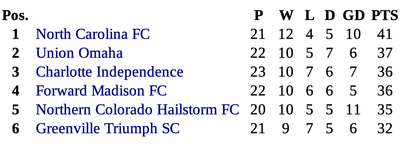
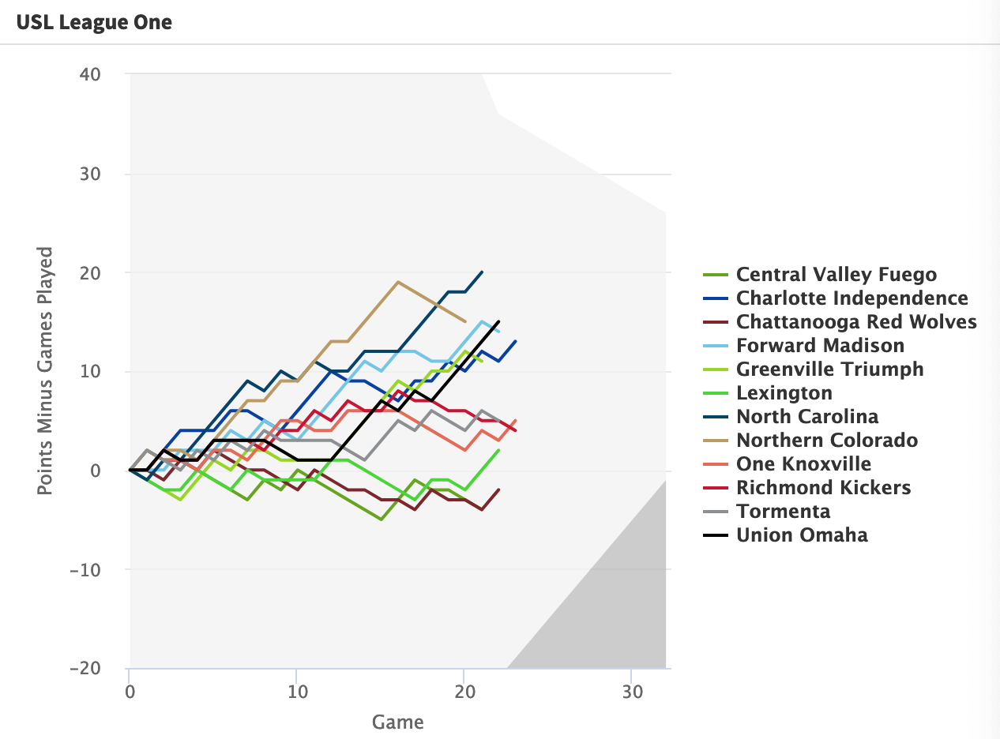
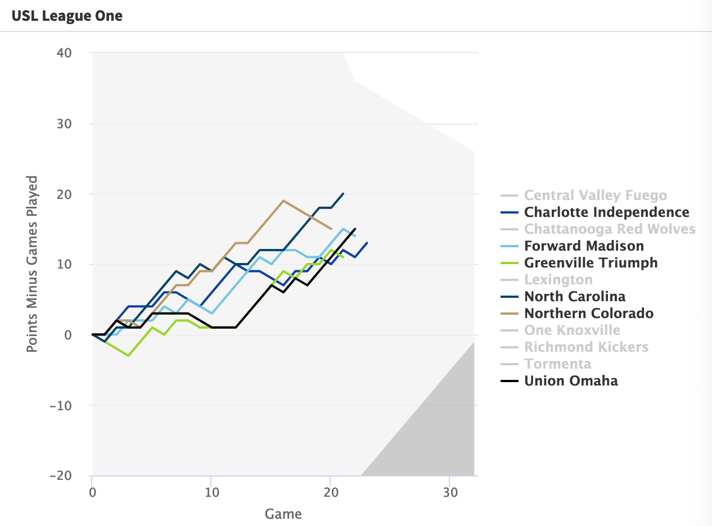
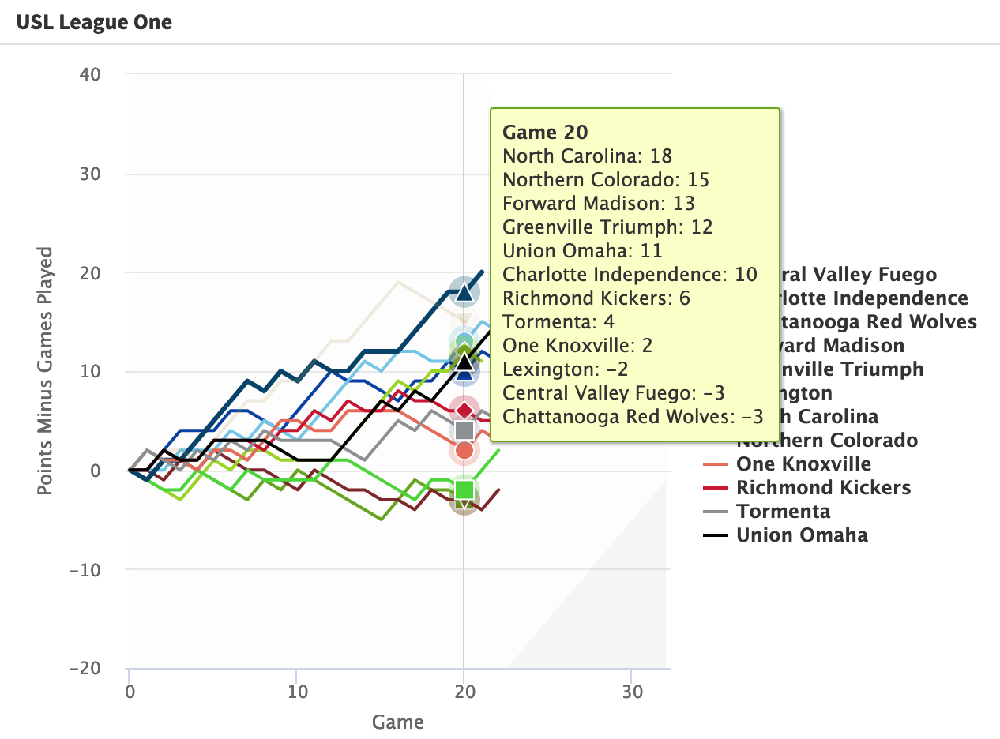

The Problem
Soccer standings tables have a problem.
For most sports that a US sports fan is accustomed to, standings are displayed by the proportion of games won out of all games played. This leads to simple standings comparisons. If Team A has a 3-1 record, their win proportion is 0.75. If Team B has a 4-2 record, their win proportion is 0.666, and they are behind Team A in the standings. Team B has one more win than Team A, but their record in their two additional games played is only 50-50, so their overall win proportion is worse, and their position in the standings is lower.
Soccer instead uses accumulation of points to rank teams in the standings. 3 points for a win, 1 point for a draw, no points for a loss. (Hockey uses a slightly different points-based system; maybe we’ll look at that in the future!) Even setting aside the inclusion of draws, which most US sports don’t have to deal with, the continual accumulation of points for positive results with no corresponding reduction for losses can lead to teams with more games played showing as higher in the standings than teams with fewer games played but a higher proportion of wins. In the example above, Team A would have 9 points for its 3 wins, but team B would have 12 points for its 4 wins, and be ahead of Team A in the standings–just the opposite of how other sports would rank them.

Now, much of the problem arises due to teams having played differing numbers of games throughout the middle of the season. By the time the season ends, every team has played the same number of games, so their points totals are comparable. But throughout the middle of the season in many leagues, some teams can get far ahead of others, resulting in standings tables that give a false picture of the relative positions of the teams.
A Modest Proposal
How do we deal with this problem? Let us assume we’re not altering the soccer points system any time soon, and instead think how we can tweak the display of standings while leaving the basic system in place. The two issues we need to deal with are:
- teams playing different numbers of games as of a given date in the middle of the season, and
- no penalty for losses, so that teams with more games played tend to show as higher in the standings than they really are.
The first issue, that teams don’t all play the same number of games by each date, is handled relatively simply by showing standings as of a given number of games played, rather than as of a given date. This is represented naturally in graphic form by showing each team’s progression game by game. If each team’s progression is a line, the length of each team’s line can equal the number of games they have played. Longer lines equal more games played, and standings can be compared at any point by drawing a vertical line down through all teams, showing their relative standings as of the selected number of games played.
The second issue, that points continually accumulate to the advantage of teams that have played more games, can be dealt with by building in a way to lose points for losing games. How to do this without really changing the three-points-for-a-win system? My proposal is to show teams’ positions by the number of points earned minus the number of games played. That is, instead of showing 3 points for a win, 1 for a draw, and 0 for a loss, I graph them as if they earn 2 points for a win, 0 for a draw, and -1 for a loss. This has no effect on the relative standings of the teams when they have all played the same number of games, but it provides a convenient visual of teams dropping when they lose and staying level when they draw. In this way, if two teams have the same record, and then one plays and loses an additional game, its line drops below the other team, realistically showing its inferior position due to the additional loss.
My Attempted Solution
You can find my working solution to these issues at my Standings Tracker site. This site includes regularly updated standings charts for MLS, USL Championship, and USL League One. Its key features include:
- Interactive charts, allowing you to highlight and select just the teams you’re interested in comparing.
- The ability to hover over any point in the chart and see every team’s relative point total as of the same number of games played.
- Later in the season, geometric areas that show when teams have clinched a playoff (or play-in) position or been mathematically eliminated from the playoffs.
It remains a work in progress, and I’m continuing to find ways to improve the display (suggestions welcome!) but I encourage you to go explore yourself and see what you think!
Some Examples
Let’s look at some concrete examples to see how it works.
As of Week 22 in the 2023 USL League One season, the top 6 teams by point total were as follows:

North Carolina FC is out in front with 41 points, followed by a very tight grouping of four teams with 35 to 37 points, and Greenville just below with 32. But the teams have played anywhere from 20 to 23 matches as of this point, so their scores are not really comparable. Charlotte and Madison have the same number of points, but Madison has “a game in hand” as they say, and Northern Colorado has played two fewer than Madison. Given its smaller number of games played, is it really in 5th place in the league?
Let’s look at the chart with my proposed changes:

And since it’s interactive, let’s just select the names of the teams we’re interested in, to reduce distraction:
 This tells us a lot more of the story. We see that Northern Colorado was at the top of the standings from Game 10 through Game 18, but has lost 4 in a row to drop below North Carolina. Even so, the fact that it has only played 20 games leaves it with plenty of upside; it’s the second place team after 20 games, and winning its next couple would keep it in second place. Even 2 draws would keep it tied for second. I certainly wouldn’t call it the fifth place team (except for its recent terrible run of form).
Of the remaining four teams, Union Omaha is indeed ahead of Madison by a point, as they’ve played the same number of games. But Charlotte, with the highest number of games played, is not at all in control of its destiny. Even if all the other top teams lose their games out to Game 23, it’s only tied for third; if the other top teams win their games out to Game 23, it’s in sixth.
To see a complete table of standings as of the same number of games, you can hover over the chart:
 Since Game 20 is the last one that all teams have played so far, that’s the latest game for which the chart shows complete standings, with North Carolina and Northern Colorado at the top, all the way down to Lexington, Central Valley, and Chattanooga, each with fewer points earned than games played.
Suggestions Welcome!
I find these charts interesting and useful, but I’m continuing to actively tweak them! If, after exploring them for yourself, you have ideas for improvement, I’d love for you to submit an issue in the Github repo or in the comments below. Enjoy!
Citation
@online{riphagen2023,
author = {Joel Riphagen},
title = {Tracking {US} {Club} {Soccer} {Standings}},
date = {2023-08-20},
url = {https://joelriphagen.net/posts/2023-08-20-standings-tracker/},
langid = {en}
}